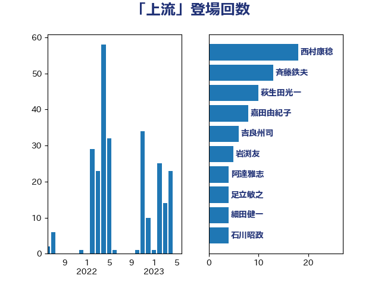

単語「上流」

| 西村康稔 | 自由民主党 | 18 回 |
| 斉藤鉄夫 | 公明党 | 13 回 |
| 萩生田光一 | 自由民主党 | 10 回 |
| 嘉田由紀子 | 無所属 | 8 回 |
| 吉良州司 | 無所属 | 6 回 |
| 岩渕友 | 日本共産党 | 5 回 |
| 阿達雅志 | 自由民主党 | 4 回 |
| 足立敏之 | 自由民主党 | 4 回 |
| 細田健一 | 自由民主党 | 4 回 |
| 石川昭政 | 自由民主党 | 4 回 |
| 河野義博 | 公明党 | 4 回 |
| 須藤元気 | 無所属 | 3 回 |
| 長浜博行 | 無所属 | 3 回 |
| 空本誠喜 | 日本維新の会 | 3 回 |
| 神津たけし | 立憲民主党 | 3 回 |
| 池下卓 | 日本維新の会 | 3 回 |
| 山口晋 | 自由民主党 | 3 回 |
| 塩田博昭 | 公明党 | 3 回 |
| 仁比聡平 | 日本共産党 | 3 回 |
| 高野光二郎 | 自由民主党 | 2 回 |
| 長峯誠 | 自由民主党 | 2 回 |
| 篠原孝 | 立憲民主党 | 2 回 |
| 石原正敬 | 自由民主党 | 2 回 |
| 林芳正 | 自由民主党 | 2 回 |
| 岸田文雄 | 自由民主党 | 2 回 |
| 山口壯 | 自由民主党 | 2 回 |
| 小宮山泰子 | 立憲民主党 | 2 回 |
| 太田房江 | 自由民主党 | 2 回 |
| 大岡敏孝 | 自由民主党 | 2 回 |
| 伊東信久 | 日本維新の会 | 2 回 |
| 中野英幸 | 自由民主党 | 2 回 |
| 青木愛 | 立憲民主党 | 1 回 |
| 鎌田さゆり | 立憲民主党 | 1 回 |
| 若松謙維 | 公明党 | 1 回 |
| 笠井亮 | 日本共産党 | 1 回 |
| 石井苗子 | 日本維新の会 | 1 回 |
| 田中健 | 国民民主党 | 1 回 |
| 熊谷裕人 | 立憲民主党 | 1 回 |
| 梶原大介 | 自由民主党 | 1 回 |
| 朝日健太郎 | 自由民主党 | 1 回 |
| 平沼正二郎 | 自由民主党 | 1 回 |
| 川田龍平 | 立憲民主党 | 1 回 |
| 岩谷良平 | 日本維新の会 | 1 回 |
| 山下芳生 | 日本共産党 | 1 回 |
| 小山展弘 | 立憲民主党 | 1 回 |
| 大野敬太郎 | 自由民主党 | 1 回 |
| 大島九州男 | れいわ新選組 | 1 回 |
| 堤かなめ | 立憲民主党 | 1 回 |
| 坂本祐之輔 | 立憲民主党 | 1 回 |
| 北村経夫 | 自由民主党 | 1 回 |
| 前川清成 | 日本維新の会 | 1 回 |
| 佐藤啓 | 自由民主党 | 1 回 |
| 中野洋昌 | 公明党 | 1 回 |
| 中根一幸 | 自由民主党 | 1 回 |
| 下野六太 | 公明党 | 1 回 |